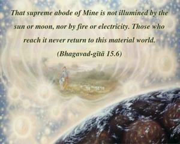
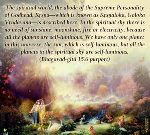
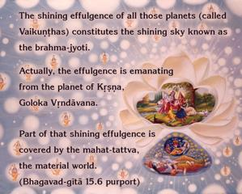
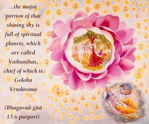
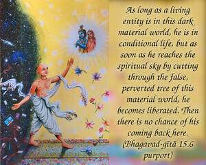
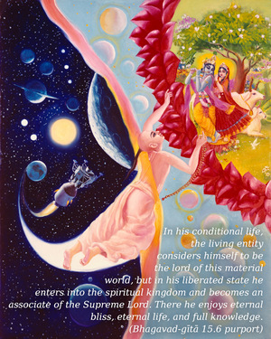
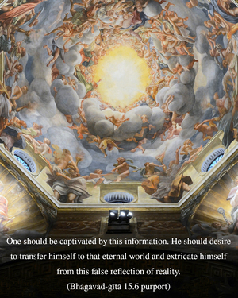
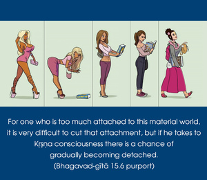
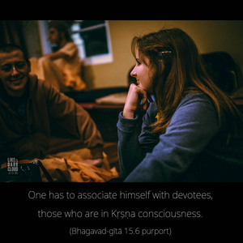
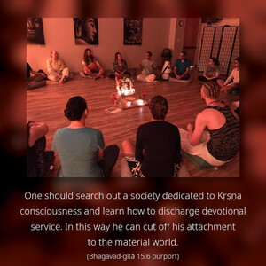

That supreme abode of Mine is not illumined by the sun or moon, nor by fire or electricity. Those who reach it never return to this material world.










The spiritual world, the abode of the Supreme Personality of Godhead, Kṛṣṇa – which is known as Kṛṣṇaloka, Goloka Vṛndāvana – is described here. In the spiritual sky there is no need of sunshine, moonshine, fire or electricity, because all the planets are self-luminous. We have only one planet in this universe, the sun, which is self-luminous, but all the planets in the spiritual sky are self-luminous. The shining effulgence of all those planets (called Vaikuṇṭhas) constitutes the shining sky known as the brahma-jyotir. Actually, the effulgence is emanating from the planet of Kṛṣṇa, Goloka Vṛndāvana. Part of that shining effulgence is covered by the mahat-tattva, the material world. Other than this, the major portion of that shining sky is full of spiritual planets, which are called Vaikuṇṭhas, chief of which is Goloka Vṛndāvana.
As long as a living entity is in this dark material world, he is in conditional life, but as soon as he reaches the spiritual sky by cutting through the false, perverted tree of this material world, he becomes liberated. Then there is no chance of his coming back here. In his conditional life, the living entity considers himself to be the lord of this material world, but in his liberated state he enters into the spiritual kingdom and becomes an associate of the Supreme Lord. There he enjoys eternal bliss, eternal life, and full knowledge.
One should be captivated by this information. He should desire to transfer himself to that eternal world and extricate himself from this false reflection of reality. For one who is too much attached to this material world, it is very difficult to cut that attachment, but if he takes to Kṛṣṇa consciousness there is a chance of gradually becoming detached. One has to associate himself with devotees, those who are in Kṛṣṇa consciousness. One should search out a society dedicated to Kṛṣṇa consciousness and learn how to discharge devotional service. In this way he can cut off his attachment to the material world. One cannot become detached from the attraction of the material world simply by dressing himself in saffron cloth. He must become attached to the devotional service of the Lord. Therefore one should take it very seriously that devotional service as described in the Twelfth Chapter is the only way to get out of this false representation of the real tree. In Chapter Fourteen the contamination of all kinds of processes by material nature is described. Only devotional service is described as purely transcendental.
The words paramaṁ mama are very important here. Actually every nook and corner is the property of the Supreme Lord, but the spiritual world is paramam, full of six opulences. The Kaṭha Upaniṣad (2.2.15) also confirms that in the spiritual world there is no need of sunshine, moonshine or stars (na tatra sūryo bhāti na candra-tārakam), for the whole spiritual sky is illuminated by the internal potency of the Supreme Lord. That supreme abode can be achieved only by surrender and by no other means.